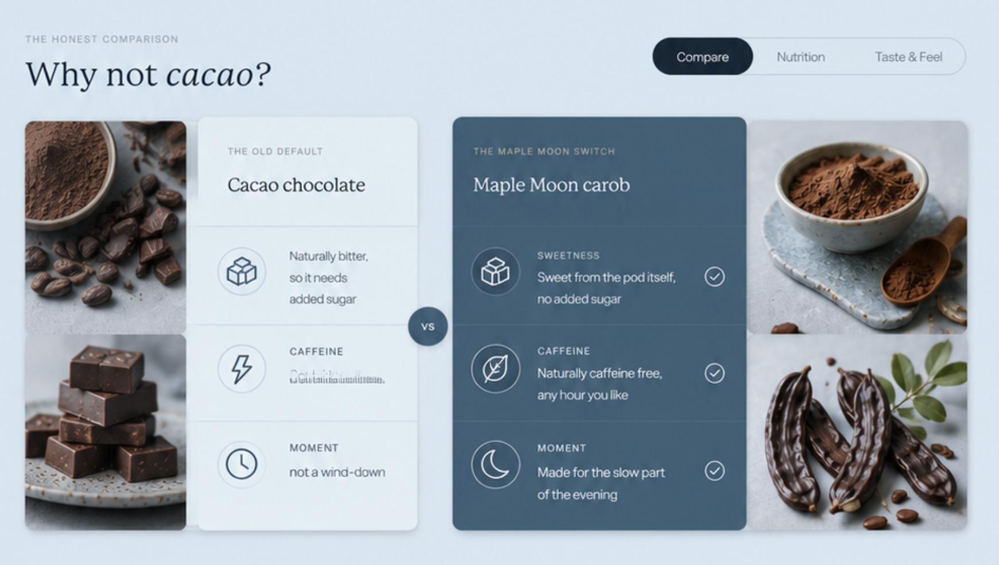
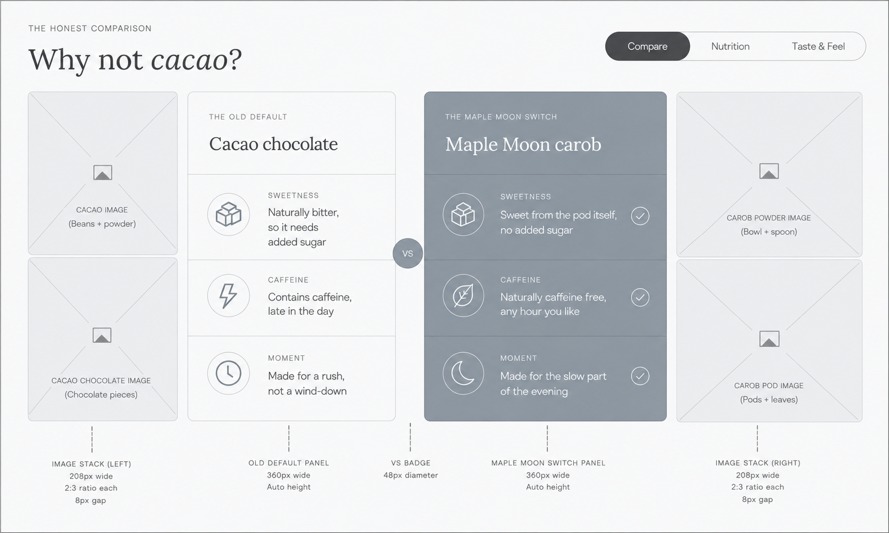

Concept reference
Comparison direction
Use this as the visual reference for hierarchy, card contrast, tabs, evidence rows, and image balance.
Local design sandbox · review only
A safe place to compare new wireframe directions for When do you moon? and the starter box before integrating anything into the homepage.
Control rule: the current homepage remains untouched. These images are design references, not approved production assets. Add future HTML/CSS concepts beside them, then annotate the comparison in a named session.
Section 01
The supplied direction shifts this from three lifestyle cards toward a calmer editorial comparison system: stronger heading, selectable modes, paired evidence, and a clearer Maple Moon switch.

Use this as the visual reference for hierarchy, card contrast, tabs, evidence rows, and image balance.

Review the tab model, image stack, icon rows, versus badge, and the boundary between visual direction and factual content.
Section 02
This is reserved for the new wireframe direction you will drop in. The current homepage version stays here as the control so we can compare without losing it.
Current homepage structure: box visual, six-bar list, gifting line, and two CTAs.
Add supplied wireframe images here as review references, then create an HTML/CSS variant only after the layout direction is clear.
Review control
{kind=link}